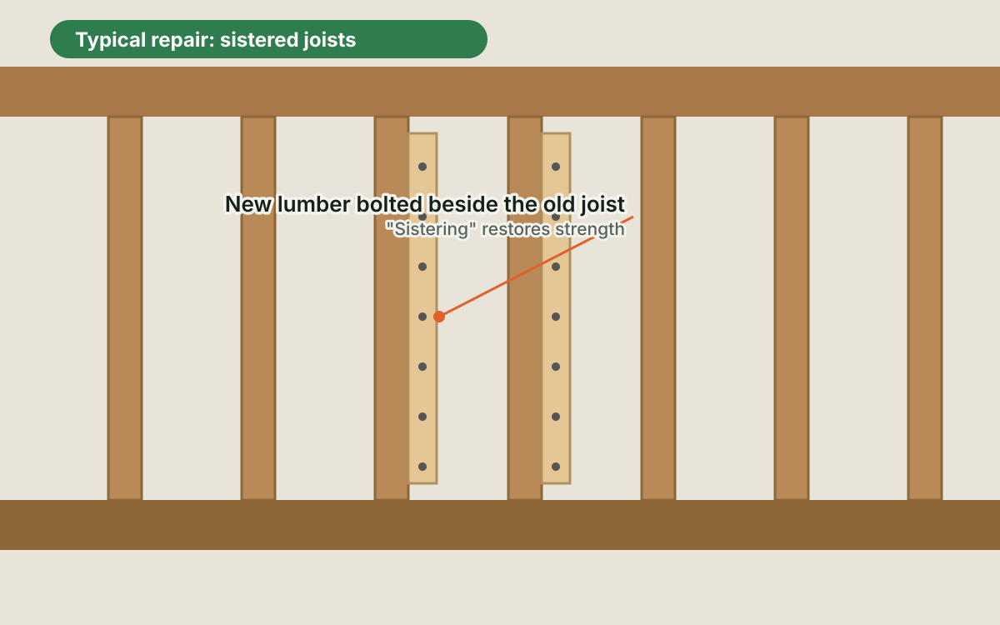
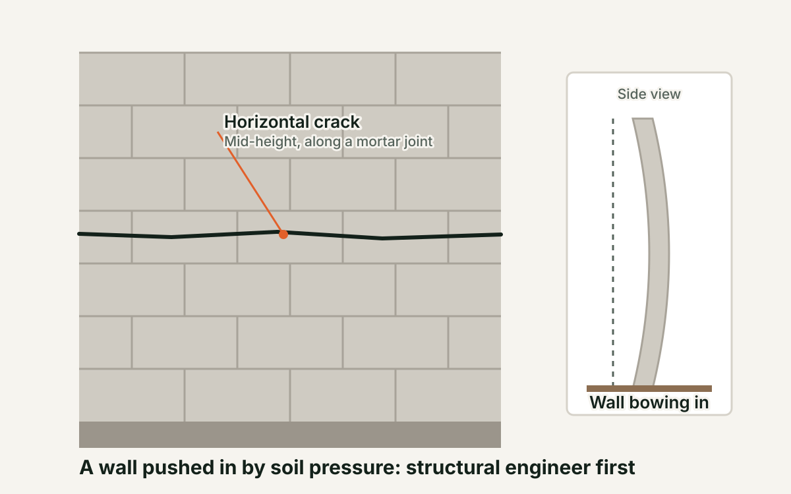
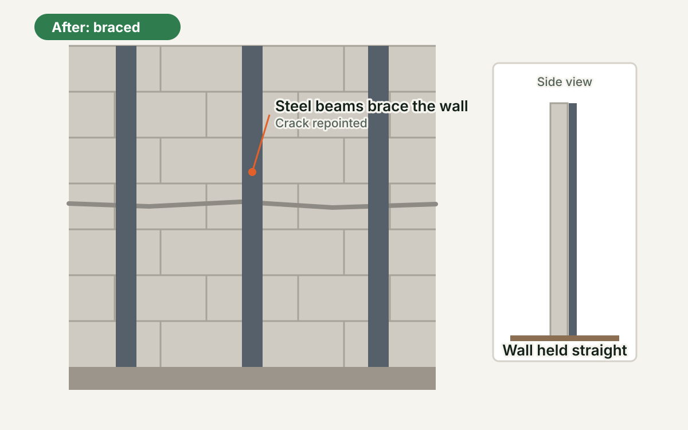
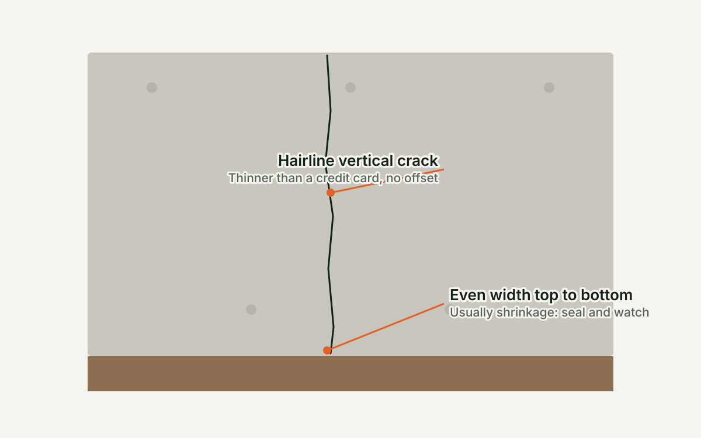
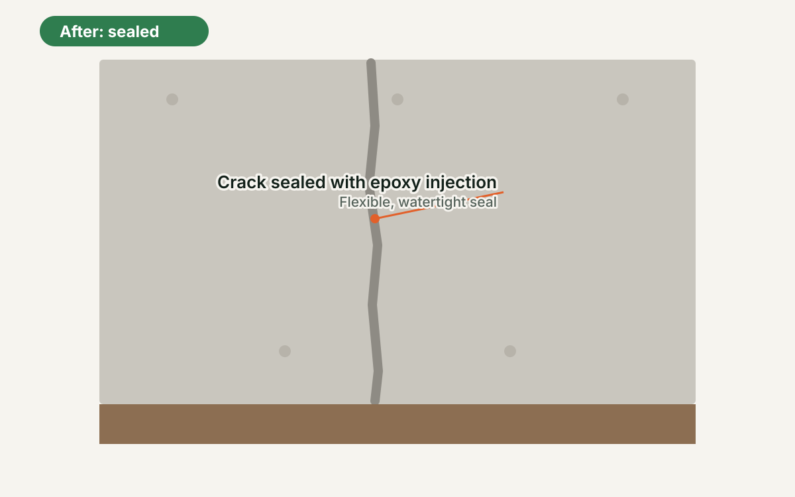

8.2 Foundations and Structure
#1
Before

Floor joists from below: look for sag, cracks and sistered boards. Photo: David Brossard, CC BY-SA 2.0, Wikimedia Commons
Typical repair

Typical repair: joists sistered. Illustration
#2
Before

Stair-step crack following the mortar joints. Photo: Achim Hering, CC BY 3.0, Wikimedia Commons
Typical repair

Typical repair: cracked joints repointed with new mortar. Photo: Oregon Department of Transportation, CC BY 2.0, Wikimedia Commons
#3
Before

Horizontal crack with the wall bowing in. Illustration
After

After: the wall braced with steel beams. Illustration
#4
Before

Hairline vertical crack in a poured wall. Illustration
After

After: the crack sealed. Illustration
#5

Crawl space of a pier and beam house. Photo: Newell Post, Public domain, Wikimedia Commons